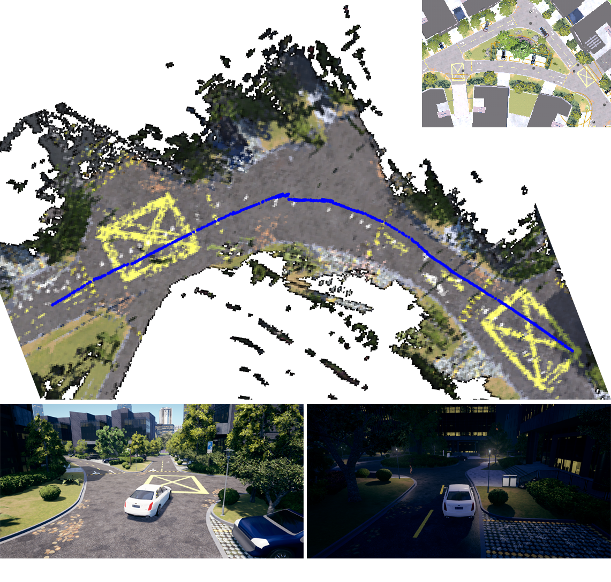
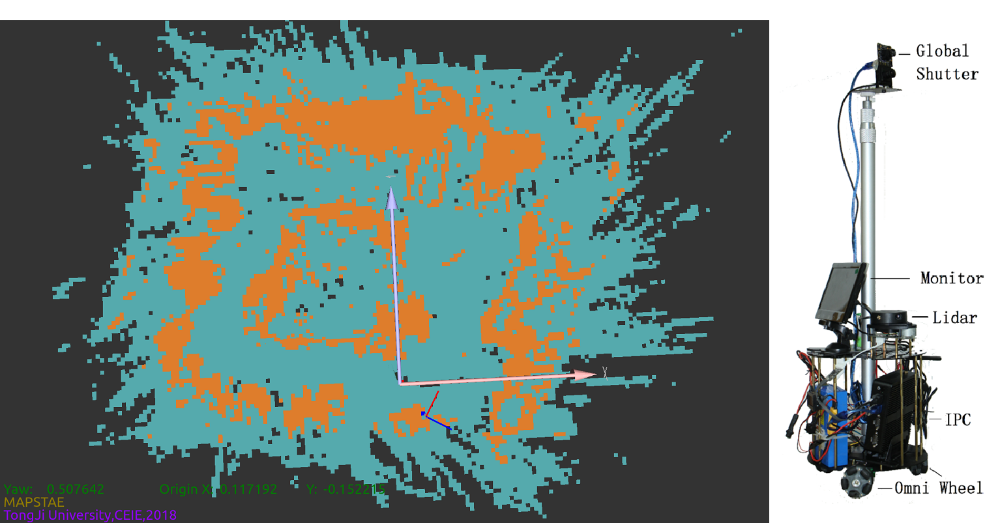
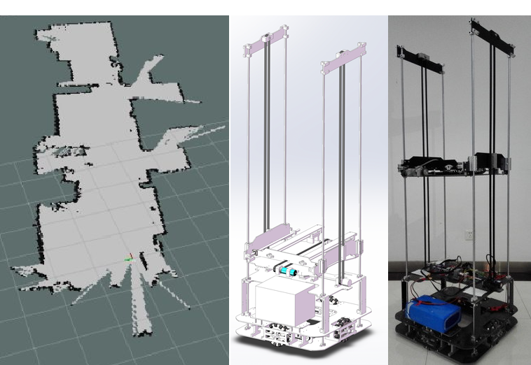
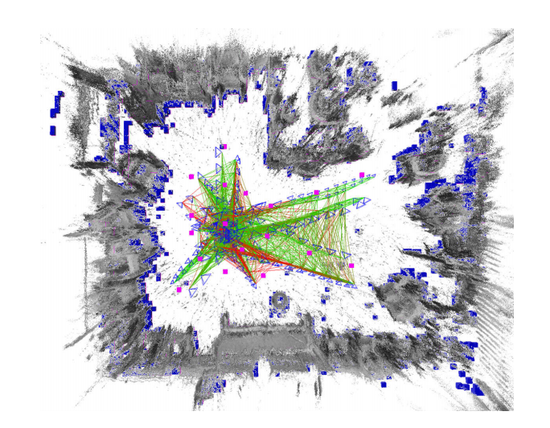
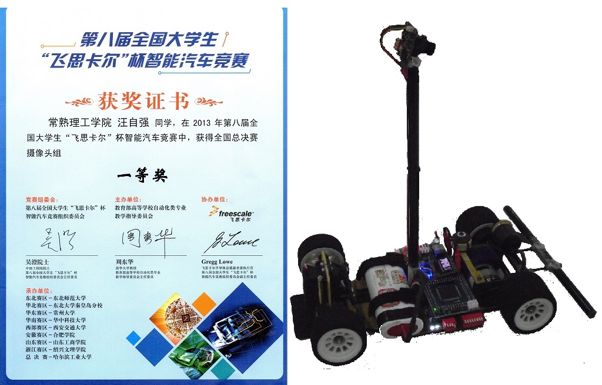
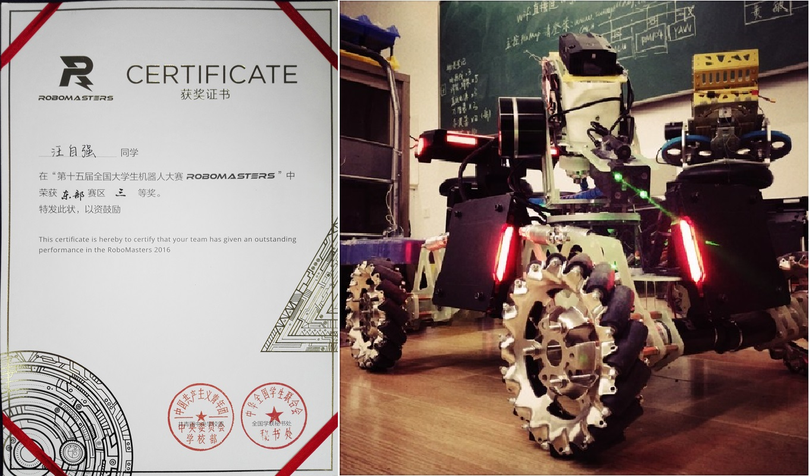

Welcome
I'm a Computer Vision researcher with focus on robot state estimaton, SLAM, VIO , 3D Computer Vision and Reconstruction. I finished my master at Tongji University in 2018, and since then am a researcher at Uisee in Shanghai China. On this website you can find my publications and associated videos, as well as links to open-source code and datasets.
Links:
 GitHub
GitHub
Contact:
1531651@tongji.edu.cn
Project Highlights
1.Stereo-VI-DSO:Direct Sparse Visual-Inertial Odometry with Stereo Cameras
We present Stereo-VI-DSO, a novel tightly-coupled
approach for visual-inertial odometry, which jointly optimizes
all the model parameters within the active window, including the
IMU pose, velocity, biases, affine brightness parameters of all
keyframes and the depth values of all selected pixels. The visual
part of the system is integrated constraints from static stereo into
the bundle adjustment pipeline of dynamic multi-view stereo,
but unlike keypoint based systems it directly minimizes the
photometric error. Fixed-baseline stereo corrects scale drift.
IMU information is accumulated between keyframes using
measurement pre-integration, and it is inserted into the
optimization as an additional constraint between keyframes.
Quantitative evaluation demonstrates that the proposed Stereo
VI-DSO is superior to Stereo DSO both in terms of tracking
accuracy and robustness. In addition, we introduce a simulation
platform developed on Unreal Engine 4, it can output raw data
of most sensors used in the field of autonomous driving. We
evaluate our method with absolute ground-truth value base on
simulation data.Paper and video can be seen at Publications[1]。We reconstructed the scene of our work zone on Unreal
Engine 4 as shown in Fig 1.

Figure 1. Bottom: Example images from the simulation platform dataset:
Strong motion, low illumination significant challenges for odometry
estimation. Still our method is able to process all sequences with a rmse of
less then 0.33m. Top: Reconstruction, estimated trajectory (bule). Top right
is a topview in same road in Unreal Editor.
2.Wheeled Robots Path Planing and Tracking System Based on Monocular Visual SLAM
Robots will work in different
warehouse environments. In order to enable robots to perceive
environment and plan path faster without modifying existing
warehouses, we uses monocular camera to achieve an efficient
robot integrated system. Mapping and path planning the two
main tasks presented in this paper. The direct method visual
odometry is applied to localize, and the 3D position of major
obstacles in the environment is calculated. We describe the
terrain with occupied grid map, the 3D points are projected onto
the robot motion plane, thus accessibility of each grid is
determined. Based on the terrain information, the optimized A*
algorithm is used for path planning. Finally, according to
localization and planning, we control the robot to track path. We
also develop a path-tracking robot prototype. Simulation and
experimental results verify the effectiveness and reliability of the
proposed method.
Paper and video can be seen at Publications[2][3]。We reconstructed the scene of our work zone as shown in Fig 2.

Figure 2: The environmental topographic map on the left shows an impassable area in yellow and an impassable area in green. On the right is a prototype robot.
3.Autobots based on Gmapping and ROS
Two dimensional lidar RPLIDAR was installed on the robot of four-wheel forklift, and ROS Gmapping was used to complete the mapping and positioning functions. ROS 'slam_gmapping node will subscribe to the LaserScan node to get LaserScan data,
Then calls the Rao - Blackwellized particle filter incremental grid map, map node to complete the building in a news release at the same time and output robot positioning data to the tf node. Gmapping is the open source 2D laser SLAM algorithm published by professor Giorgio at the university of freiburg in Germany in 2007.
In the early years of SLAM, it had great significance and was widely used. Four-wheel forklift robot is used for cargo transportation in warehouse environment.
We reconstructed the scene of our work zone as shown in Fig 3.

Figure 3: The left picture is a two-dimensional Lidar odometer map, the middle picture is a forklift robot drawing, and the right picture is a robot entity.
Publications
 1.Direct Sparse Visual-Inertial Odometry with Stereo Cameras (Ziqiang Wang, Chengcheng Guo), No open,under review by IROS, 2019.
1.Direct Sparse Visual-Inertial Odometry with Stereo Cameras (Ziqiang Wang, Chengcheng Guo), No open,under review by IROS, 2019.
 [Supplementary Material]
[Supplementary Material]
 [Video]
[Video]
 2.Wheeled Robots Path Planing and Tracking System Based on Monocular Visual SLAM (Ziqiang Wang, Hegen Xu, Youwen Wan), 2018.
2.Wheeled Robots Path Planing and Tracking System Based on Monocular Visual SLAM (Ziqiang Wang, Hegen Xu, Youwen Wan), 2018.
[pdf]
[Video]
[code]

3.Research and Implementation of Robot Path Planning Based on VSLAM (Ziqiang Wang, Hegen Xu, Youwen Wan), In International Conference on Electrical Engineering, Control and Robotics (EECR), 2017.
[pdf]
Rewards
1.“Freescale cup” National College Students Intelligent Car Competition ，National First Prize, 2013.
[video]

2.“Huawei cup” National Post-Graduate Mathematical Contest in Modeling ，National Second Prize, 2017.

3.“Renesas cup”National Undergraduate Electronics Design Contest，Provincial Second Prize, 2013.
4. RoboMaster Robotics Competition，Provincial Third Prize, 2016.
[video]
